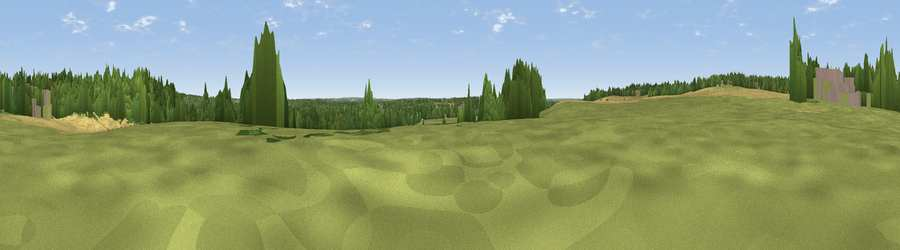

Warren Hill
#41982 in England · top 61% of its area beats it · near ShiplakeThe view, rendered

A 360° render of this exact spot computed from the terrain model, tree cover and land cover — summer colours, afternoon light, calibrated against photographs of famous viewpoints. Real trees, hedges and buildings will differ in detail.
The panorama
Grey silhouette: terrain skyline in each direction (720 bearings, Earth curvature and refraction included). Dashed green: skyline with trees (+15 m) and buildings (+8 m) as obstacles. Blue strip: how far the ground is visible on each bearing.
Where the view opens
Wedge length = distance to the farthest visible ground on that bearing (vegetation-aware). Rings at 10, 25 and 50 km.
What fills the view
47% grassland · 31% woodland · 14% cropland · 7% built-up · 1% water
Angular shares of the visible panorama (visual magnitude), not map area. Landscape diversity 0.54 (0–1 Shannon).
Key numbers
More beautiful places nearby
The staircase of upgrades: each row has a higher view potential than everything closer. Driving times are estimates from straight-line distance, calibrated against real road routing — check an actual route before setting out.
| Place | Direction | Drive | Score |
|---|---|---|---|
| Viewpoint near Dunsden Green | WSW · 3 km | ~8 min | 30.8 |
| Viewpoint near Lower Shiplake | NE · 3 km | ~8 min | 38.8 |
| Viewpoint near Crazies Hill | ENE · 5 km | ~11 min | 44.3 |
| Viewpoint near Kiln Green | ENE · 5 km | ~11 min | 44.4 |
| Viewpoint near Knowl Hill | ENE · 7 km | ~14 min | 46.3 |
| Viewpoint near Mapledurham | W · 10 km | ~19 min | 46.6 |
| Viewpoint near Fawley | NNW · 10 km | ~20 min | 56.1 |
| Fultness Wood Hill | NE · 11 km | ~21 min | 57.8 |
51.49604, -0.90100 · source: osm peak · position refined by local search. Computed location — check access rights before visiting.